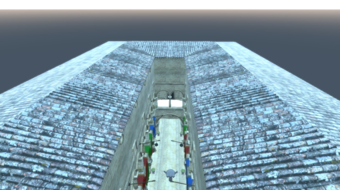

ProceduralSkyTextureData QML Type
Generates an HDR skybox cubemap. More...
| Import Statement: | import QtQuick3D.Helpers |
| Inherits: |
Properties
- groundBottomColor : color
- groundCurve : real
- groundEnergy : real
- groundHorizonColor : color
- skyCurve : real
- skyEnergy : real
- skyHorizonColor : color
- skyTopColor : color
- sunAngleMax : real
- sunAngleMin : real
- sunColor : color
- sunCurve : real
- sunEnergy : float
- sunLatitude : real
- sunLongitude : real
- textureQuality : SkyTextureQuality
Detailed Description
This helper type provides an easy way to generate a lightprobe/skybox texture in HDR format. Note that generating a lightprobe is an expensive process that can take significant time on embedded hardware.
The generated cubemap consists of three elements: the sky, the ground, and the sun. The sky and the ground cover the top and bottom hemispheres. The position of the sun can be specified by setting sunLatitude and sunLongitude.
View3D { environment: SceneEnvironment { backgroundMode: SceneEnvironment.SkyBox lightProbe: Texture { textureData: ProceduralSkyTextureData { } } } }

See also SceneEnvironment.
Property Documentation
groundBottomColor : color |
Specifies the ground color at the bottom of the skybox. The bottom half of the skybox has a gradient from groundHorizonColor to groundBottomColor.
groundCurve : real |
Modifies the curve of the ground gradient.
groundEnergy : real |
Specifies the intensity of the bottom half of the skybox. The ground gradient is multiplied with this factor.
groundHorizonColor : color |
Specifies the ground color at the horizon. The bottom half of the skybox has a gradient from groundHorizonColor to groundBottomColor.
skyCurve : real |
Modifies the curve of the sky gradient.
skyEnergy : real |
Specifies the intensity of the top half of the skybox. The sky gradient is multiplied with this factor.
skyHorizonColor : color |
Specifies the sky color at the horizon. The top half of the skybox has a gradient from skyHorizonColor to skyTopColor.
skyTopColor : color |
Specifies the sky color at the top of the skybox. The top half of the skybox has a gradient from skyHorizonColor to skyTopColor.
sunAngleMax : real |
Specifies the angle from the center of the sun to where it fades out completely.
sunAngleMin : real |
Specifies the angle from the center of the sun to where it starts to fade.
sunColor : color |
Specifies the color of the sun.
sunCurve : real |
Modifies the curve of the sun gradient.
sunEnergy : float |
Specifies the intensity of the sun.
sunLatitude : real |
Specifies the angle between the horizon and the sun position.
sunLongitude : real |
Specifies the angle between the forward direction and the sun position.
textureQuality : SkyTextureQuality |
This property sets the quality of the sky texture. Supported values are:
| Constant | Description |
|---|---|
ProceduralSkyTextureData.SkyTextureQualityLow | Generate a 512x512 texture |
ProceduralSkyTextureData.SkyTextureQualityMedium | Generate a 1024x1024 texture |
ProceduralSkyTextureData.SkyTextureQualityHigh | Generate a 2048x2048 texture |
ProceduralSkyTextureData.SkyTextureQualityVeryHigh | Generate a 4096x4096 texture |